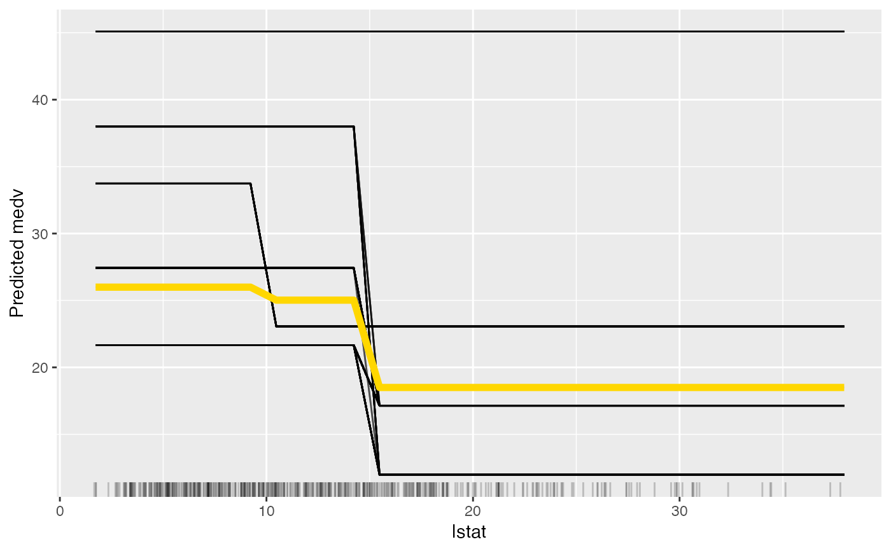
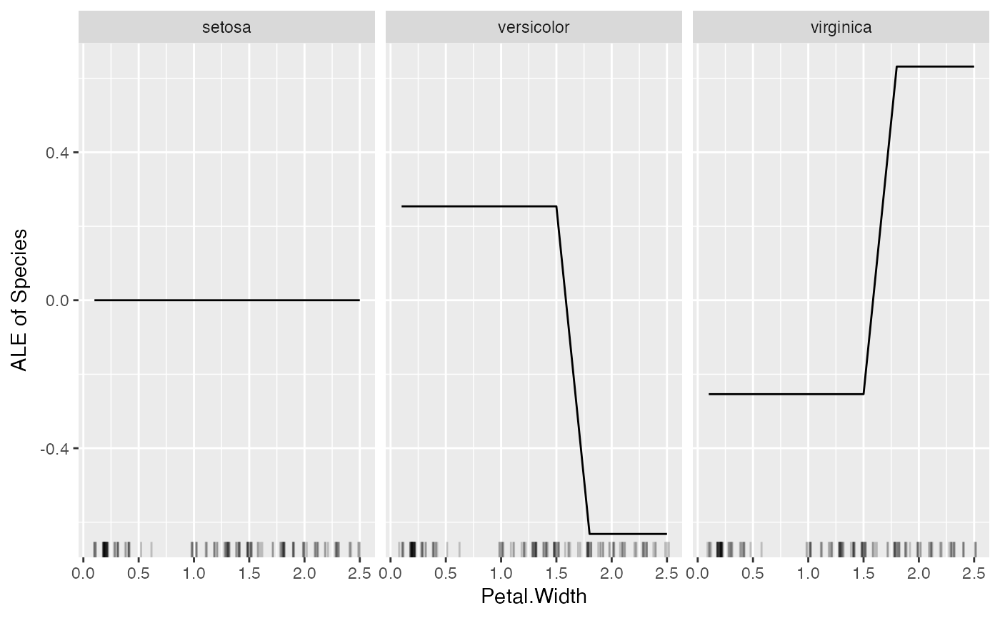
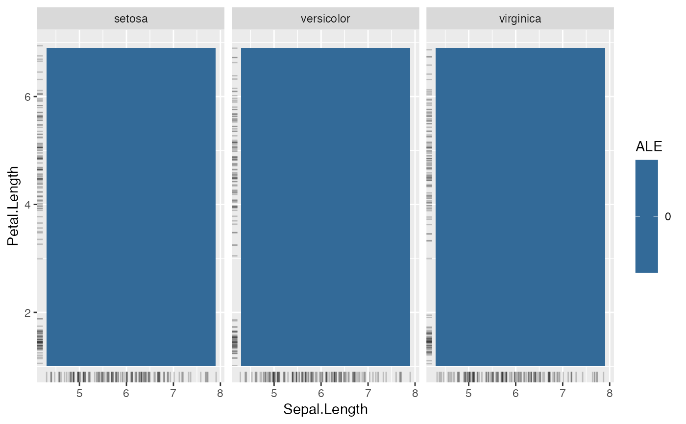
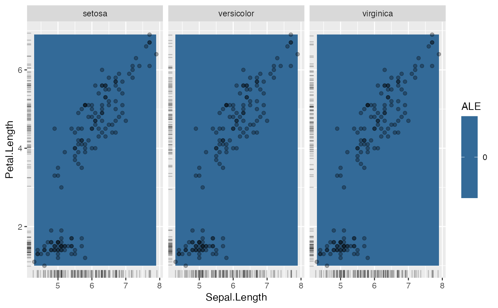

FeatureEffect computes and plots (individual) feature effects
of prediction models.
The FeatureEffect class compute the effect a feature has on the prediction. Different methods are implemented:
Accumulated Local Effect (ALE) plots
Partial Dependence Plots (PDPs)
Individual Conditional Expectation (ICE) curves
Accumulated local effects and partial dependence plots both show the average model prediction over the feature. The difference is that ALE are computed as accumulated differences over the conditional distribution and partial dependence plots over the marginal distribution. ALE plots preferable to PDPs, because they are faster and unbiased when features are correlated.
ALE plots for categorical features are automatically ordered by the similarity of the categories based on the distribution of the other features for instances in a category. When the feature is an ordered factor, the ALE plot leaves the order as is.
Individual conditional expectation curves describe how, for a single observation, the prediction changes when the feature changes and can be combined with partial dependence plots.
To learn more about accumulated local effects, read the Interpretable Machine Learning book.
For the partial dependence plots: https://christophm.github.io/interpretable-ml-book/pdp.html
For individual conditional expectation: https://christophm.github.io/interpretable-ml-book/ice.html
Apley, D. W. 2016. "Visualizing the Effects of Predictor Variables in Black Box Supervised Learning Models." ArXiv Preprint.
Friedman, J.H. 2001. "Greedy Function Approximation: A Gradient Boosting Machine." Annals of Statistics 29: 1189-1232.
Goldstein, A., Kapelner, A., Bleich, J., and Pitkin, E. (2013). Peeking Inside the Black Box: Visualizing Statistical Learning with Plots of Individual Conditional Expectation, 1-22. https://doi.org/10.1080/10618600.2014.907095
iml::InterpretationMethod -> FeatureEffect
grid.size(numeric(1) | numeric(2))
The size of the grid.
feature.name(character(1) | character(2))
The names of the features for which the partial dependence was computed.
n.features(numeric(1))
The number of features (either 1 or 2).
feature.type(character(1) | character(2))
The detected types of the features, either "categorical" or "numerical".
method(character(1))
center.atnumeric
Value at which the plot was centered. Ignored in the case of two
features.
Inherited methods
new()Create a FeatureEffect object
FeatureEffect$new(
predictor,
feature,
method = "ale",
center.at = NULL,
grid.size = 20,
grid.points = NULL
)predictorPredictor
The object (created with Predictor$new()) holding the machine
learning model and the data.
feature(character(1) | character(2) | numeric(1) |
numeric(2))
The feature name or index for which to compute the effects.
method(character(1))
'ale' for accumulated local effects,
'pdp' for partial dependence plot,
'ice' for individual conditional expectation curves,
'pdp + ice' for partial dependence plot and ice curves within the same plot.
center.at(numeric(1))
Value at which the plot should be centered. Ignored in the case of two
features.
grid.size(numeric(1) | numeric(2))
The size of the grid for evaluating the predictions.
grid.points(numeric() | list(numeric(), numeric()))
An optional grid along the feature. If grid.points are set, the grid.size
argument is ignored. Provide a list of two vectors with the same order as
in the 'feature' argument, if PDP/ALE for two features is to be computed
with a user-defined grid.
predict()Predict the marginal outcome given a feature.
datadata.frame
Data.frame with the feature or a vector.
extrapolate(character(1))
If TRUE, predict returns NA for x values outside of observed range.
If FALSE, predcit returns the closest PDP value for x values outside the range.
Ignored for categorical features
# We train a random forest on the Boston dataset:
data("Boston", package = "MASS")
library("rpart")
rf <- rpart(medv ~ ., data = Boston)
mod <- Predictor$new(rf, data = Boston)
# Compute the accumulated local effects for the first feature
eff <- FeatureEffect$new(mod, feature = "rm", grid.size = 30)
eff$plot()
# Again, but this time with a partial dependence plot and ice curves
eff <- FeatureEffect$new(mod,
feature = "rm", method = "pdp+ice",
grid.size = 30
)
plot(eff)
# Since the result is a ggplot object, you can extend it:
library("ggplot2")
plot(eff) +
# Adds a title
ggtitle("Partial dependence") +
# Adds original predictions
geom_point(
data = Boston, aes(y = mod$predict(Boston)[[1]], x = rm),
color = "pink", size = 0.5
)
# If you want to do your own thing, just extract the data:
eff.dat <- eff$results
head(eff.dat)
#> rm .value .type .id
#> 1 3.561000 19.58263 pdp NA
#> 2 3.740966 19.58263 pdp NA
#> 3 3.920931 19.58263 pdp NA
#> 4 4.100897 19.58263 pdp NA
#> 5 4.280862 19.58263 pdp NA
#> 6 4.460828 19.58263 pdp NA
# You can also use the object to "predict" the marginal values.
eff$predict(Boston[1:3, ])
#> [1] 22.30267 19.58263 27.44788
# Instead of the entire data.frame, you can also use feature values:
eff$predict(c(5, 6, 7))
#> [1] 19.58263 19.58263 27.44788
# You can reuse the pdp object for other features:
eff$set.feature("lstat")
plot(eff)

# Only plotting the aggregated partial dependence:
eff <- FeatureEffect$new(mod, feature = "crim", method = "pdp")
eff$plot()
# Only plotting the individual conditional expectation:
eff <- FeatureEffect$new(mod, feature = "crim", method = "ice")
eff$plot()
# Accumulated local effects and partial dependence plots support up to two
# features:
eff <- FeatureEffect$new(mod, feature = c("crim", "lstat"))
#> Loading required namespace: yaImpute
plot(eff)
# FeatureEffect plots also works with multiclass classification
rf <- rpart(Species ~ ., data = iris)
mod <- Predictor$new(rf, data = iris, type = "prob")
# For some models we have to specify additional arguments for the predict
# function
plot(FeatureEffect$new(mod, feature = "Petal.Width"))

# FeatureEffect plots support up to two features:
eff <- FeatureEffect$new(mod, feature = c("Sepal.Length", "Petal.Length"))
eff$plot()

# show where the actual data lies
eff$plot(show.data = TRUE)

# For multiclass classification models, you can choose to only show one class:
mod <- Predictor$new(rf, data = iris, type = "prob", class = 1)
plot(FeatureEffect$new(mod, feature = "Sepal.Length"))